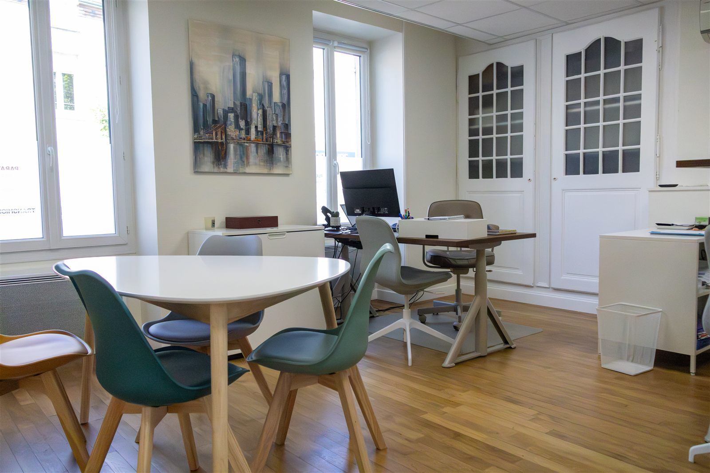
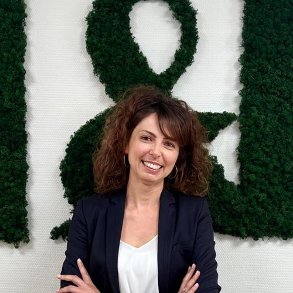
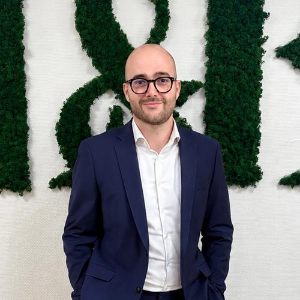
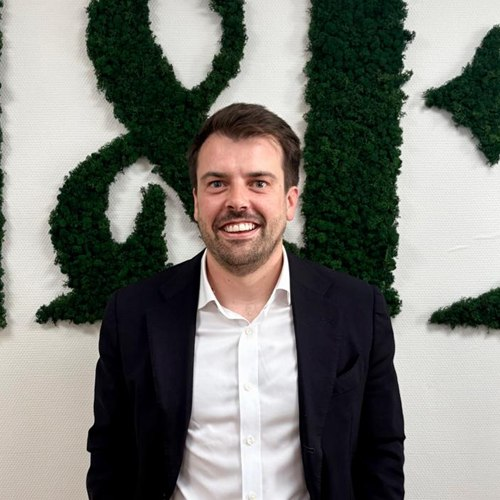

L&E Conseil Finance et Patrimoine
Cabinet en gestion de patrimoine indépendant à Orléans
Notre cabinet indépendant est spécialisé dans l'élaboration et la mise en place de stratégies patrimoniales sur-mesure.
Nous avons la conviction que la protection et la valorisation de votre patrimoine nécessitent une diversification de qualité ; nous sélectionnons auprès de partenaires de référence des solutions performantes en architecture ouverte, sélectionnées pour leur couple rendement / risque optimal.
Avec nos bureaux à Olivet et à Orléans dans le Loiret, notre cabinet vous apporte son expertise en région Centre, en région parisienne et sur toute la France.
Choisir L&E Conseil Finance et Patrimoine, c'est décider de prendre en main son avenir en donnant vie à ses envies. — Guillaume Boutin

Vos conseillers en gestion de patrimoine indépendants à Orléans
Suivre le cabinet sur LinkedIn ↗Guillaume Boutin
Associé fondateurDiplômé d'un double diplôme en ingénierie et en stratégie à HEC Paris, j'ai toujours été attiré par l'entrepreneuriat. Après 15 ans d'expérience dans le secteur privé, j'ai décidé de travailler en lien avec mes valeurs et de fonder le cabinet L&E Conseil Finance et Patrimoine. J'accompagne aussi bien les investisseurs privés que les dirigeants d'entreprise dans la structuration et l'optimisation de leur patrimoine.
LinkedIn ↗
Laure Imbert
Responsable juridique et conformitéDiplômée d'un Master en Gestion de patrimoine obtenu à l'université d'Orléans, après une expérience en étude notariale puis en agence bancaire, j'ai intégré le cabinet où je suis en charge des études juridiques et patrimoniales. Titulaire du DU « Gestion du patrimoine des personnes protégées » de l'université de Nice, j'accompagne également les familles concernées par la protection juridique d'un proche (tutelle, curatelle, habilitation familiale).
LinkedIn ↗
Etienne Valdeyron
Dirigeant associéFort de 10 années d'expérience chez un acteur de référence de la protection sociale et du conseil, j'ai développé une expertise approfondie dans la protection sociale des dirigeants et des professions libérales. J'ai choisi de mettre cette expérience au service d'un cabinet local, indépendant et sur mesure, avec une approche fondée sur la proximité et le conseil personnalisé.
LinkedIn ↗
Benjamin Botton
Dirigeant associéDepuis une dizaine d'années, j'accompagne les dirigeants dans la construction et la protection de leur patrimoine. Un engagement que je poursuis aujourd'hui en tant qu'associé chez L&E Conseil Finance Patrimoine, fidèle à mes convictions d'accompagnement humain et durable. Mon expertise en protection sociale et patrimoniale me permet une approche globale, présente de la création à la transmission du patrimoine de mes clients.
LinkedIn ↗Société à mission
Notre cabinet est une société à mission depuis janvier 2022. Notre raison d'être est d'aider les particuliers et dirigeants d'entreprise à donner du sens à leur patrimoine, tout en soutenant un avenir durable.
Pour cela, nous nous engageons à :
- Reverser 1% de notre chiffre d'affaires annuel à des associations à but non lucratif (culture, santé, éducation, environnement).
- Sélectionner principalement des produits d'investissement à impact socialement responsable.
- Consacrer du temps à aider gracieusement des associations, des particuliers en situation précaire, des mairies et des centres hospitaliers.
Les agréments du cabinet


Notre cabinet possède toutes les certifications et agréments afin d'offrir une expertise réputée, par l'enregistrement à l'ORIAS sous le n° 21001105 pour les activités de :
- Conseiller en investissements financiers (CIF) — afin de vous conseiller et vous proposer les produits financiers qui vous correspondent.
- Courtier d'assurance ou de réassurance (COA) — pour vous assurer et vous protéger contre les aléas de la vie.
Titulaires de la Carte Professionnelle de Transaction sur Immeubles et Fonds de commerce sous le numéro CPI4501202100000016 délivrée par la CCI du Loiret (45). Membre de la Chambre Nationale des Conseils en Gestion de Patrimoine (CNCGP), association agréée par l'Autorité des Marchés Financiers (AMF).
Enfin, nous sommes assurés pour toutes nos activités par une responsabilité civile professionnelle et une garantie financière notoirement solvables : la garantie s'élève à 3 200 000 € par sinistre et par année d'assurance pour les activités de conseil en gestion de patrimoine, conseil en investissement financier (CIF), et à 3 500 000 € par sinistre et par année d'assurance pour le courtage d'assurances de personnes.
La société L&E Associés, entité juridique distincte exerçant sous le nom commercial L&E Conseil Finance et Patrimoine, est également enregistrée à l'ORIAS sous le n° 26010266 pour l'activité de Courtier en assurance (COA).
L'approche unique de notre cabinet
Prenons contact par courriel ou téléphone
Ce premier échange informel et convivial nous permet de définir ensemble vos préoccupations et vos principales attentes, et ainsi fixer la date de notre premier rendez-vous.
1ère consultation offerte, sans engagement
Ce premier rendez-vous nous permet de dresser un bilan détaillé de votre situation personnelle et/ou professionnelle et de définir vos objectifs à court, moyen et long terme.
La solution qui vous ressemble
Ce second rendez-vous est l'occasion de vous présenter votre bilan patrimonial et de vous proposer plusieurs solutions en lien avec vos objectifs, avec des produits sur-mesure et haut de gamme.
Votre accompagnement à vie
Nous nous engageons à vous accompagner, vous informer et vous conseiller, dans toutes les étapes décisives de votre vie.